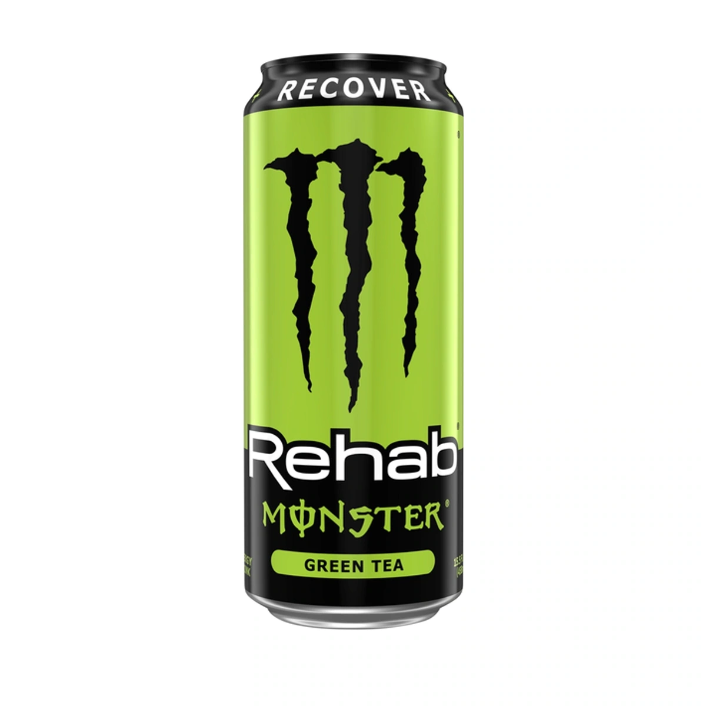
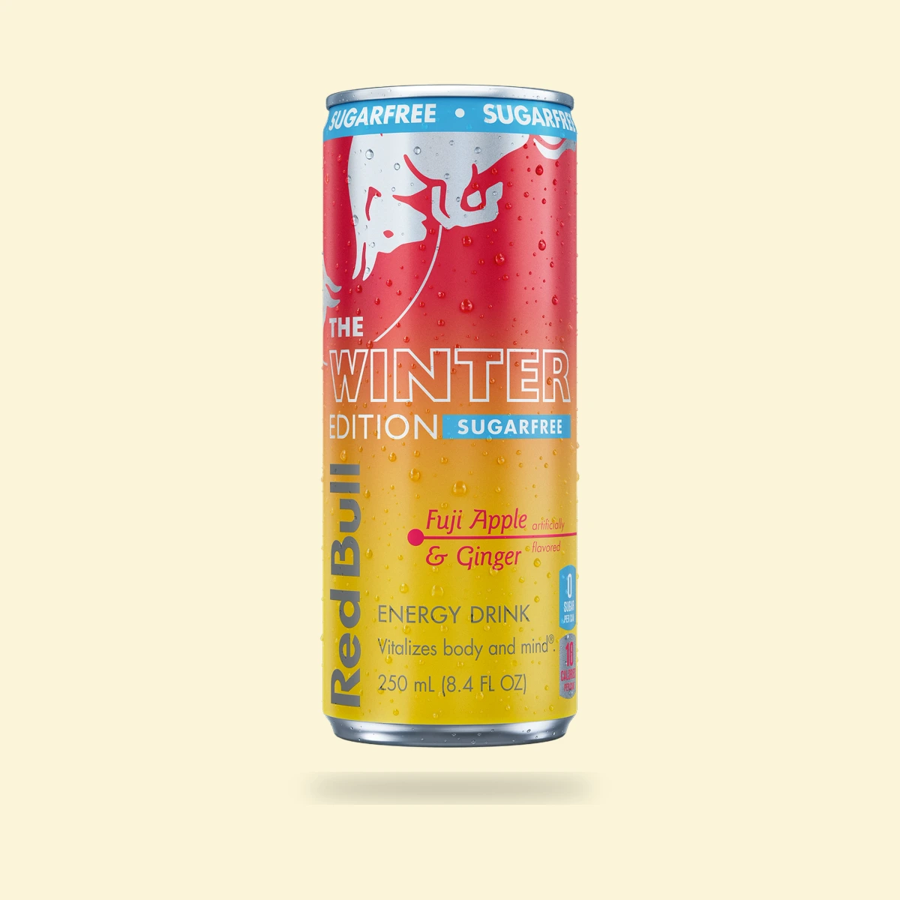
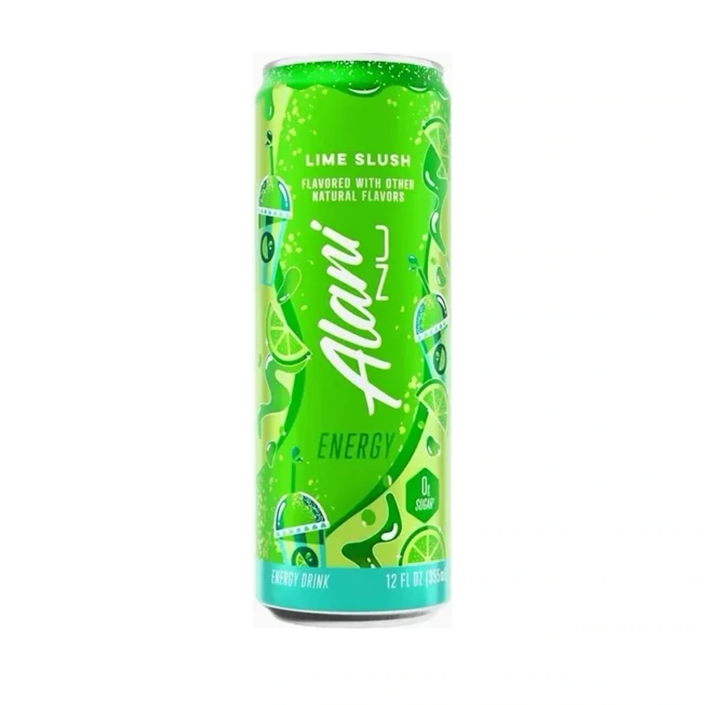
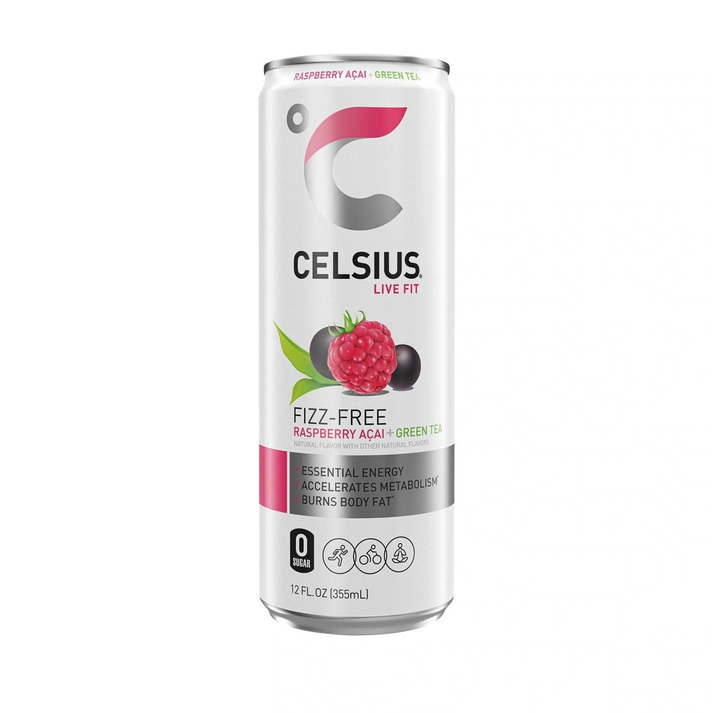
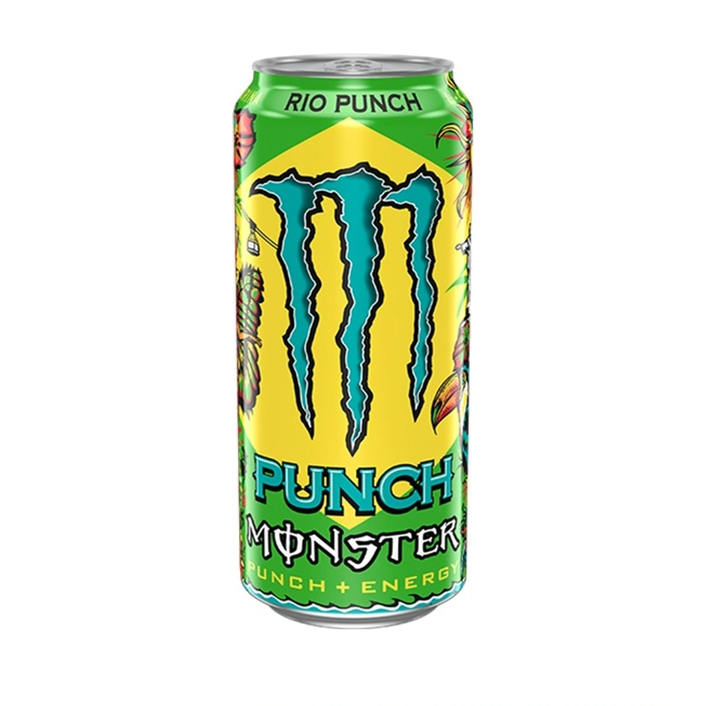

Monster Rehab Green Tea: is an October exit coming?
Our September 13 review examines the October 1 claim, Monster's official U.S. pages, and what an empty shelf actually tells you.
8 min read
What is new. What is gone. What is coming back.
Search is temporarily unavailable. You can still browse every article using the page links below.
31-36 of 46 articles

Our September 13 review examines the October 1 claim, Monster's official U.S. pages, and what an empty shelf actually tells you.

Fuji Apple & Ginger is back permanently as Apple Edition, but the U.S. Sugarfree can from winter 2025 did not return with it.

The bright green limited release ended after its 2026 U.S. run; remaining packs are sell-through inventory.

The 2026 Fizz-Free refresh kept Peach Mango but left Raspberry Acai Green Tea out of the current U.S. lineup.

Rio Punch appears in the same October rumor as Ruby Red and Green Tea, but public Monster sources still list it.
A specific report names Rehab Green Tea for October 1, while Monster’s official page still treats it as current.